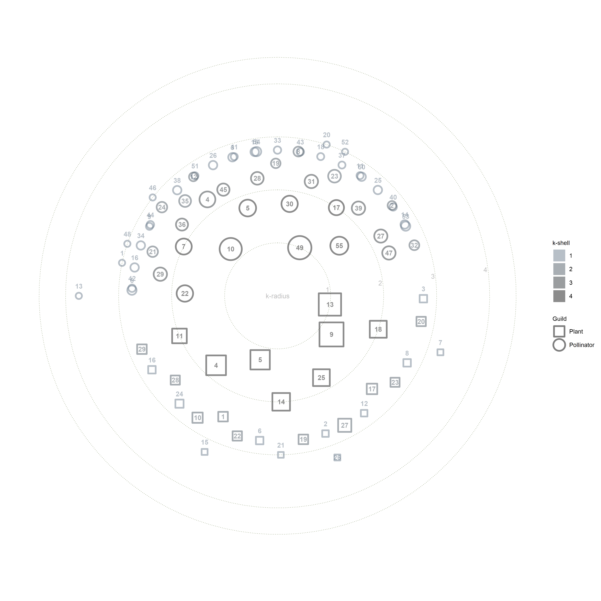

Network: M_PL_012

Pollinator 1 Acmaeodera.cisti., 2 Anaspis.proteus., 3 Andrena.sp1.M_PL_012, 4 Anthophora.alluaudi, 5 Apis.mellifera, 6 Aricia.cramera., 7 Artogeia.rapae., 8 Attalus.sp1.M_PL_012, 9 Bibio.elmoi, 10 Bombus.canariensis., 11 Brachypterus.sp1.M_PL_012, 12 Bruchidius.wollastoni., 13 Chrysotoxum.triarcuatum., 14 Cleora.fortunata., 15 Colias.crocea., 16 Cornutiplusia.circumflexa., 17 Cyclyrius.webbianus, 18 Dasyphora.albofasciata., 19 Delia.platura., 20 Drosophila.sp1.M_PL_012, 21 Empis.sp1.M_PL_012, 22 Eristalis.tenax, 23 Gonepteryx.cleopatra, 24 Halictus.sp1.M_PL_012, 25 Heringia.adpropinquans., 26 Lampides.boeticus., 27 Lasioglossum.chalcodes, 28 Lasioglossum.loetum., 29 Lycaena.phlaeas., 30 Macroglossum.stellatarum, 31 Maniola.jurtina, 32 Meliscaeva.auricollis., 33 Mordella.israelsoni., 34 Myotropa.florea., 35 Pandoriana.pandora., 36 Pararge.xiphioides., 37 Piezodorus.punctipes., 38 Podalonia.tydei., 39 Pontia.daplidice., 40 Pseudogonia.fasciata., 41 Sapromyza.sp1.M_PL_012, 42 Siphona.sp1.M_PL_012, 43 Sphecodes.marginatus., 44 Sphecodes.ruficrus., 45 Tachina.canariensis, 46 Thaumatomyia.notata., 47 Thyreus.histrionicus., 48 Tricimba.humeralis., 49 Unidentified.sp1.M_PL_012, 50 Unidentified.sp2.M_PL_012, 51 Unidentified.sp3.M_PL_012, 52 Unidentified.sp4.M_PL_012, 53 Vanessa.atalanta., 54 Vanessa.cardui., 55Vanessa.indica.
Plant
1 Adenocarpus foliosus, 2 Ageretina adenophora, 3 Aichryson laxum, 4 Anacyclus radiatus, 5 Andryala pinnatifida, 6 Appolonias barbujana, 7 Argyranthemum broussonetti, 8 Carduus tenuiflorus, 9 Cedronella canariensis, 10 Cistus monspeliensis, 11 Echium plantagineum, 12 Erica arborea, 13 Galactites tomentosa, 14 Geranium canariense, 15 Geranium robertianum, 16 Hypericum grandifolium, 17 Ilex canarienis, 18 Laurus azorica, 19 Leontodon taraxacoides, 20 Picconia excelsa, 21 Psoralia bituminosa, 22 Ranunculus cortusaefolius, 23 Raphanus raphanistrum, 24 Rhamnus glandulosa, 25 Senecio steetzii, 26 Silene gallica, 27 Sonchus cf. ortunoi, 28 Sonchus tenerrimus, 29Viola riviniana
Olesen unpubl. Garajonay, Gomera, Spain